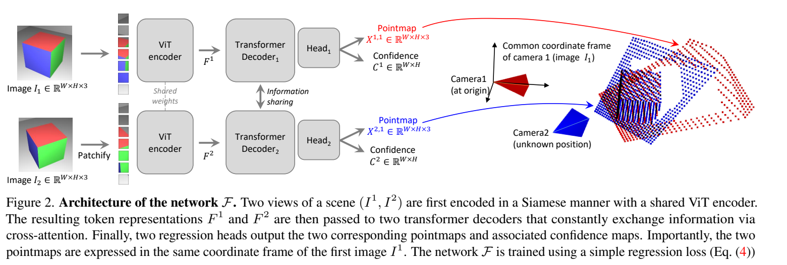
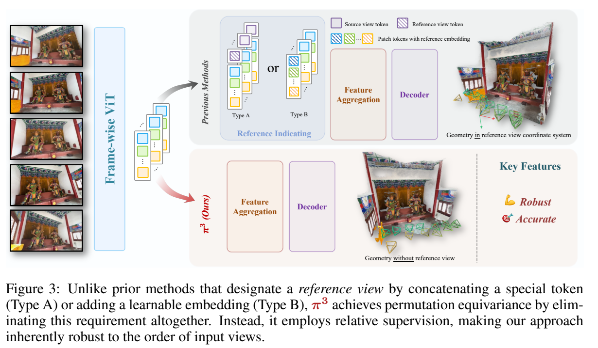

主问题：一致性放在哪里？
是由 pointmap 的监督隐式学到，还是由深度、射线和刚体变换的组合显式约束？多个输出头的冗余能帮助学习，也可能相互不一致。
从 DUSt3R 的共同坐标系 pointmap 出发，比较 VGGT、π³、MapAnything、DA3 与 VGGT-Ω：预测什么、在哪个坐标系预测，以及哪些一致性由结构保证。
默认熟悉相机投影、Transformer 和 SfM 基本概念；论文特有的尺度、损失与表示转换在下方展开。第一遍沿主文阅读，第二遍打开推导并回查原文。
本专题负责建立比较框架。需要补论文细节时，进入独立精读页；每页固定提供 motivation、method、training、experiment、discussion，并保留原论文关键图表。其他专题也可直接链接到这些页面和段落。

从两图回归理解 pointmap
原图 · 方法 · 实验 · 讨论 ↗
从成对几何走向多视骨干
原图 · 方法 · 实验 · 讨论 ↗
取消固定参考视图的特权
原图 · 方法 · 实验 · 讨论 ↗
形状、相机、尺度与条件输入
原图 · 方法 · 实验 · 讨论 ↗
紧凑表示与教师监督的交点
原图 · 方法 · 实验 · 讨论 ↗
保留几何监督，减少稠密读出
原图 · 方法 · 实验 · 讨论 ↗通用重建不只是把图像变成一团点。模型需要同时处理局部形状、相机关系和场景尺度。不同表示把这些误差耦合在不同位置：直接预测世界坐标，局部形状要承受相机误差；先预测局部形状再变换，误差会经过相机与尺度传播。
是由 pointmap 的监督隐式学到，还是由深度、射线和刚体变换的组合显式约束？多个输出头的冗余能帮助学习，也可能相互不一致。
固定第一帧让目标明确，却赋予某个观测特殊角色。取消这个角色，需要在架构和损失中一起处理全局坐标自由度。
本章统一使用列向量、camera-to-world 位姿：Ti = [Ri, ti]。pi 是第 i 个相机系中的点，X 是共同世界系中的点，齐次像素为 u = (u,v,1)⊤。论文原式的 world-to-camera 记号需要先取逆。
| 量 | 含义 | 不能与它混同 |
|---|---|---|
| z-depth：dz | 点在相机光轴上的 z 坐标 | 到相机中心的欧氏距离 |
| ray-depth：ρ | 沿单位射线的距离，ρ = ‖p‖ | 未经换算的 z-depth |
| local pointmap | 每个像素在自己的相机系中的3D点 | 多个局部点图自动共享一个世界系 |
| world pointmap | 每像素的点已表达在一个共同坐标系 | 它必然符合一个合法针孔相机 |
| metric scale | 把相对形状转换到物理单位的尺度 | 仅凭单目RGB几何就可唯一观测的量 |
以针孔相机为例，令 r = K−1u，其 z 分量为1；令单位射线 q = r / ‖r‖。同一个局部3D点可写成：
MapAnything 输出单位局部射线 q 和相对 ray-depth ρ̃，再经过相机旋转、平移和独立尺度 m；其直接射线表示也能覆盖更一般的中心相机，不要求所有 q 都来自针孔 K：
DA3 的方向 d = RK−1u 不单位化，已含从像素到世界方向的比例；与相机 z-depth 相乘：
因此不能把 DA3 的 d 归一化后仍使用原 dz；若要改成单位射线，必须同时把 depth 乘以 ‖d‖。这项转换在大视场边缘最明显。
依据：MapAnything §3 / §3.2；DA3 §3.1。上式为统一符号后的重写。原文 · 2509.13414v3 · 本地全文文本 · 原文 · 2511.10647v1 · 本地全文文本
在上述 c2w 记号下，把像素映到世界射线的矩阵是 Hray = RK−1，反向映射才是 Hproj = Hray−1 = KR⊤。后者适合用 RQ 分解恢复上三角 K 和正交旋转。
可以先用像素—方向对应拟合 Hray，再求逆和分解；还要固定符号、K 的归一化以及旋转行列式。射线原点的均值可估计相机中心，但自由预测的每像素原点未必相同。
实际部署还可用论文的轻量 camera head，避免逐像素射线拟合；“depth-ray 足够”是表示层面的主张，不等于工程实现只保留两个输出。
坐标自由度（gauge freedom）讨论的是同一个重建如何表达；置换等变讨论的是重排输入后网络如何响应。二者有关，却不是同一个条件。
对整个场景施加正尺度 s、旋转 Q 和平移 a。世界点、相机旋转与相机中心同步变换：
变换后的局部点为：
透视除法使这个 s 消掉，所以 Kp′ 与 Kp 给出同一像素。没有额外尺度测量时，一组重投影一致的图像不能区分同比例放大的场景和相机基线。网络仍可通过物体尺寸、拍摄分布等统计先验预测 metric scale，但这不改变几何上的不可辨识性。
若仅改变世界SE(3)坐标，(GTi)−1(GTj) = Ti−1Tj；若包含尺度，则相对旋转不变，相对平移长度随尺度变化。这解释了 π³ 为什么还需要同一个尺度去监督 pointmaps 与相机平移。
DUSt3R 指定第一相机；VGGT 以特殊 token 标记第一帧。只交换其他视图与更换第一帧是两种不同操作。理论上可以事后变换坐标，但网络重新推理未必给出完全相同的形状。
如果 Pπ 重排输入，要求 f(PπI)=Pπf(I)。视图相关输出同步重排，且没有首帧特权。它并不保证几何正确、尺度可观测，或遮挡后唯一解。
同一模型的顺序鲁棒性实验需要统一坐标/尺度后比较，并固定推理随机性、后处理与输出对应关系；不能直接比较未经对齐的世界坐标数组。
| 方法 | 核心输出组织 | 参考与尺度 | 主要阅读问题 |
|---|---|---|---|
| DUSt3R | 两图共同系 pointmaps | 第一相机；共同未知尺度 | 几何回归如何替代显式匹配入口？ |
| VGGT | 相机＋深度＋点图＋跟踪特征 | 第一帧特殊；冗余监督 | 训练时冗余为何有帮助？ |
| π³ | 局部点图＋相机 | 无首帧特权；序列共同尺度 | 怎样摆脱参考视图偏置？ |
| MapAnything | 单位射线＋ray-depth＋姿态＋scale | 第一帧参考；独立 metric 分支 | 形状与物理尺度如何分工？ |
| DA3 | z-depth＋世界射线；可加相机头 | 统一尺度训练；像素对齐相机 | 输出简化与预训练复用哪个起作用？ |
| VGGT-Ω | 深度＋相机；派生几何监督 | 保留参考帧；减少稠密头 | 监督需要存在，输出头也必须存在吗？ |
每个像素直接对应第一相机系中的3D点。两分支交换信息，不必先生成离散匹配再逐步三角化。相机、深度和对应关系成为这种表示的下游读出。
对预测和真值分别做共同尺度归一化，再用带置信度的3D回归。CroCo 初始化是重要条件，不应把效果只归因于输出格式。
§4.6 检查预训练与分辨率；§4 的各任务需分别检查采用哪种相机恢复与对齐路径。
两图前向无需输入标定；多图需要连接图像对并全局对齐。自由 pointmap 的每个点不一定服从同一个物理相机模型。
z、z* 是各自有效点到原点距离的均值。后一项防止用任意降低置信度逃避所有误差。作为一般损失分析：若 c 无下界且 e 固定，其驻点为 α/e；论文采用 c>1 的参数化，所以更不是一个直接校准的“正确概率”。
读后回答：为什么共同坐标系能建立对应，而它又不必然给出精确像素匹配？接着读 MASt3R。
从两图 decoder 走向多视联合融合。相机和 register tokens 区分首帧与其他帧；训练时同时监督多个相关量。
深度与相机已能生成点云，但直接 pointmap 头仍有训练价值。论文指出推理时深度反投影通常优于直接点图输出。
表5控制注意力架构与参数规模；表6移除各辅助任务。表1单列前馈与附加 BA 的相机结果。
主干输出跟踪特征，由单独查询模块产生2D轨迹。它不是直接给出所有像素的动态3D轨迹。完整流程也可能包含 BA。
一个可用于检查模型输出、但并非这里宣称的论文训练项的残差是：
共享骨干和各自监督不会强制 Δ=0。小残差只说明两个输出自洽；若相机和深度共同错了，它们仍可自洽。应再比较重投影、对应点和真值误差。
读后回答：辅助输出带来的收益需要保留该头到推理阶段吗？将这个问题带到 VGGT-Ω。
若没有指定参考帧，却仍要求世界坐标匹配某个任意首帧，目标会与架构对称性冲突。π³ 在自身相机系预测形状，通过相对位姿监督相机关系。
所有局部点图用一个共同尺度对齐真值，该尺度也用于相对平移。这样形状、相机基线才可组合成统一几何。
§4.4 将每帧依次放到首位，在 DTU/ETH3D 比较重建指标波动；§4.5 和附录 A.6 检查局部点图及相对位姿建模。
公开主模型继承 VGGT 的部分初始化；附录还讨论从头训练时的辅助监督。顺序稳定有结构依据，跨模型精度差异不能全归因于它。
按论文 §3.2，用带逆深度权重的稳健对齐求整个序列的 s*，下式省略有效掩码：
相对位姿 T̂i←j=T̂i−1T̂j 的旋转用 SO(3) 测地角损失；平移用同一个 s*：
若每个点图用不同 si，相机平移就无法用同一变换解释各视图。若只监督绝对相机而不消除任意世界变换，则网络会被迫学习数据中人为选定的坐标。两个约束必须配套理解。
读后回答：置换等变解决了哪类不稳定，又没有解决哪类不确定性？对照 GeoCond 的位姿可靠性。
局部射线描述相机，ray-depth 描述沿射线的形状，相机位姿把局部观测变到首帧系；最后用单一 m 赋予物理尺度。它仍有参考视图，和 π³ 是不同设计轴。
旋转、平移、深度、射线分别编码；训练随机选择模态和视图，使模型在纯 RGB、部分已知、完整已知之间复用。
表5(a)对比因子化与尺度建模；表5(b)对比通用条件训练与专用输入配置。先核对是纯 RGB 还是提供几何条件。
metric 标注与非metric标注共同训练需要仔细归一化。纯 RGB 的绝对尺度泛化仍依赖训练分布；有测量输入时才有额外尺度约束。
论文把形状与尺度监督解耦：由相对世界点图得到归一化因子 z̃，metric 预测的范数采用：
sg 表示停止梯度。尺度损失可更新 m，而不会沿 z̃ 反向改变形状分支。几何仍有自己的点图、深度、射线、姿态等监督；“尺度独立”不等于共享特征之间完全统计独立。
本文分析：这是避免“形状缩小、scale 变大”相互补偿的一种梯度分工。是否足以在新域保持 metric calibration，还需专门实验。
读后回答：给定错误的内参或部分深度时，通用模型会纠正条件还是忠实服从条件？与 Pow3R、MetricAnything 一起读。
把相机表达为像素对齐的原点/方向射线，与深度组合得到点云。Dual-DPT 共享重组模块，但深度与射线有不同的融合层。
输入 token 的重排使后段注意力跨视图工作；教师伪标签改善真实深度监督。已知相机可编码为条件 token。
表6检查目标组合；表7检查骨干、注意力安排、共享头、教师和条件输入。消融用较小 ViT-L、最多10视图，不等同于最终 Giant 训练设置。
自由 ray map 不自动满足所有像素共用一个相机中心和合法 K、R。单目、metric、GS 版本分别有训练与能力边界。
Xp=op+dz,pdp 可对任何预测逐像素计算。但一个中心针孔相机还要求：
因此“depth-ray 足以表示几何”与“输出天然满足相机约束”是不同主张。可以比较原点方差、方向拟合残差，以及使用 camera head 反投影后的误差。这些是本章提出的分析量，不是声称原论文已报告的指标。
读后回答：表7的架构收益中，预训练覆盖率占多少？如果统一初始化，结论是否还成立？
减少稠密头，点图经深度和相机反投影得到；matching 监督施加于特征。25%全局注意力改成寄存器间交互，再由帧内层传播回图像 token。
有监督初始化后，引入 EMA 教师的无标注视频自监督阶段，并扩展模型与数据规模。
§4.3 同文消融比较 register 替换、派生监督、原多头结构及自监督。单一稠密头仍有相机头。
仅替换部分全局注意力，不能据此称整体线性；动态场景深度/相机恢复也不等于提供持续运动轨迹。
读后回答：删掉 point head 与删掉 point supervision 的效果是否相同？对照 VGGT 的多任务消融后再回答。
六篇骨干建立了表示比较的主线；另外三项主归属分别补充多参考融合、大规模集合推理和工程功能边界。
MV-DUSt3R 将两图交互扩展为多视 decoder；“+”增加跨参考视图融合，减少单一参考选择的影响。
多张 RGB；无需 K / 位姿
多图前馈
§3.1–3.3；§4.3–4.7：室内多房间数据、不同视图数、参考融合消融。
融合多个参考系不等同于 π³ 的结构性置换等变；Gaussian 分支是附加的渲染任务。
原文 · 2412.06974v1 · 本地全文文本 · 总览记录
交叉阅读：07 · 可渲染场景与几何证据
一次融合整个图像集合并预测局部及共同参考系 pointmaps，用图像索引采样帮助训练长度外推。
多张 RGB；无需 K / 位姿
多图前馈
§3；§4.1、§5.3：训练 20 视图与大规模推理分开；场景/物体分别评测。
千图演示依赖分辨率、显存与多 GPU 头部推理；不代表线性计算，也不代表无参考偏置。
π³ 官方工程升级：卷积输出头、连续质量置信度、可选条件输入与近似 metric scale。
RGB＋可选内参、位姿、深度
工程版本
官方 README：2025-12-28 更新、Engineering Update、输入输出接口。
单独标为工程条目；README 的功能描述不代替独立论文消融，不能把这些能力回填给原版 π³。
原文 · README 2026-10-24 快照 · 本地全文文本 · 总览记录
交叉阅读：02 · 单目先验、尺度与条件输入
下面以论文内部的对照为单位，不把不同数据、模型规模和后处理的绝对分数拼成排行榜。表中的“未排除”是本次审查判断。
| 原文证据 | 可支持的结论 | 仍需排除的解释 / 限制 |
|---|---|---|
| DUSt3R §4.6 | 在其训练设置下，跨视预训练和分辨率影响下游表现。 | 不能据此把全部提升只归于 pointmap 参数化。 |
| VGGT 表5、表6 | 交替注意力与多任务监督在其消融中有益。 | 辅助头有训练价值，不表示每个头推理时都最准确。 |
| π³ 表6、表7；附录A.4/A.6 | 取消参考特权改善排列稳定性；表示与监督共同影响几何。 | 跨模型对比仍混合初始化、数据和训练差异；须读匹配条件的实验。 |
| MapAnything 表5 | 因子化及尺度分工有利于其通用条件训练。 | 并未证明所有输入域的纯RGB metric scale 都校准良好。 |
| DA3 表6–7 | depth-ray、部分跨视注意力、共享头及教师标签有实证支持。 | 消融是 ViT-L/≤10视图；最终 Giant 与更长输入的行为不能全部外推。 |
| VGGT-Ω §4.3 | 减少直接稠密输出，同时保留几何监督，是可行的效率折中。 | register替换不改变全部注意力的渐近复杂度；规模与数据质量需分别分析。 |
相对位姿 AUC：角误差在阈值内的表现，不能单独说明基线 metric 长度。
AbsRel / depth：必须说明对齐策略；逐帧对齐可掩盖时间尺度漂移。
点云 accuracy / completeness：表面距离，不直接刻画对应身份或遮挡处轨迹。
PSNR / SSIM：渲染证据，不能独立证明几何与相机正确。
下面是本章提出的研究延伸，没有运行实验，也不是原论文已确认的结论。
假设：预测阶段取消参考特权，再在输出后选择应用需要的参考系，能降低坏首帧导致的几何波动。
缺口：已有骨干对比混合了初始化和训练数据；稳定性并不自动带来更高精度。
验证：固定骨干、数据与预算，比较固定首帧、随机参考、完全等变三组；遍历首帧并控制弱纹理、遮挡及低重叠。统一尺度后记录误差均值、最差分位与顺序方差。
可证伪条件：相同训练条件下，完全等变仅减少数值波动，却没有改善坏参考下的几何或位姿。
假设：对自由 ray / pointmap 输出施加轻量相机一致性约束，能改善分布外标定而不损失形状细节。
缺口：可组合表示与严格合法相机不是一回事；约束过强可能伤害非针孔或畸变数据。
验证：统一骨干比较自由点图、自由depth-ray与显式K/R/t；分别测试针孔、偏主点、广角和畸变。记录射线残差、重投影、深度边界与相机误差。
可证伪条件：约束只使内部残差变小，真实几何无改善，或非针孔域明显受损。
假设：形状/尺度解耦后，独立校准的尺度置信度能识别尺寸先验失效，并从极少 metric 提示中稳定恢复尺度。
缺口：平均 metric 误差不足以说明校准，传感器条件与纯RGB条件也不同。
验证：构造相似外观、不同实物尺寸及新域场景；比较无提示、1个可靠距离、多点稀疏深度。分别报告形状误差、尺度误差、校准和拒绝曲线。
可证伪条件：置信度不能排序尺度错误，或改进只来自增加测量而非模型分工。
假设：保留派生 point loss 和特征匹配监督、去除直接稠密辅助头，可在相同训练预算下获得更好的精度/显存折中。
缺口：VGGT 与 Ω 的最终模型还改变了骨干、数据、训练和输出实现。
验证：固定初始化和数据，分别移除“头”“损失”“二者”；同时按相同 token 预算与相同时间预算比较。记录训练峰值显存、收敛、几何和匹配指标。
可证伪条件：同预算下直接辅助头始终有不可替代收益，或显存节约没有转化为质量/吞吐改善。
下一章建议进入 在线重建与长期状态：当输入无法一次性放入模型时，参考系、尺度和历史信息会怎样共同影响漂移？
六篇论文精读作为可复用补充页独立维护。其他专题可直接引用各页的 method、experiment、discussion 等段落，不必重复整篇介绍。
表格与方法讨论按固定来源核对；本页统一记号、比较框架及研究假设属于阅读分析。跨论文分数保留各自协议，未进行模型复现。
§3.1–3.4；§4.1–4.6：分别检验定位、相机、深度和点云；预训练与分辨率消融不能略过。
正文 §3–4；附录 reciprocal matching 收敛与速度分析；定位和 DTU 三角化实验应区分相机输入。
§3.1–3.3；§4.3–4.7：室内多房间数据、不同视图数、参考融合消融。
§3；§4.1、§5.3：训练 20 视图与大规模推理分开；场景/物体分别评测。
§3.2–3.4；§5、附录 A.2：VO、尺度、相机、几何及记忆设计分析。
§3.1–3.4；§4.1 表1、§4.5 表5–6：注意力结构、多任务、BA 边界。
§3.1–3.4；§4.1–4.5：条件引导、MVS、相机与结构消融。
§3；§4.4 表6、§4.5 表7、附录 A.2/A.4/A.6：顺序鲁棒性与训练条件。
§3.1–3.3；§4 表5(a)(b)：表示与尺度解耦、通用条件训练对专用训练。
§3–4；§7.2 表6–7：输出目标、注意力安排、共享头、教师监督消融。
原文 · README 2026-10-24 快照 · 本地全文文本
官方 README：2025-12-28 更新、Engineering Update、输入输出接口。
§3.1–3.5；§4.3：25% register 替换、派生 point/matching 损失与规模实验。
§3.2–3.5；§4.2–4.4：长序列位姿、重建与关键帧/缓存窗口消融。
§3.1–3.3；§4：KITTI/Waymo 轨迹、ETH3D/Sintel/DIODE 深度及后端消融。
§3.2–3.4；§4：ScanNet++ NVS、外推与 Gaussian 分支分析。
§3.1–3.4；§4：相机、稀疏几何、NVS 与级联设计消融。
§3；§4 表3–5：NVS、相机、一致性与体素化消融。
§3.2–3.3；§4.1–4.3、附录：metric几何、边界、分辨率与尺度设计。
§3.1–3.4；§4、附录：Tanks&Temples、CO3D、驾驶场景与严格/宽松位姿阈值。
§2.1–2.3；§4.2–4.4：4D跟踪、重建和查询局部 patch 消融。